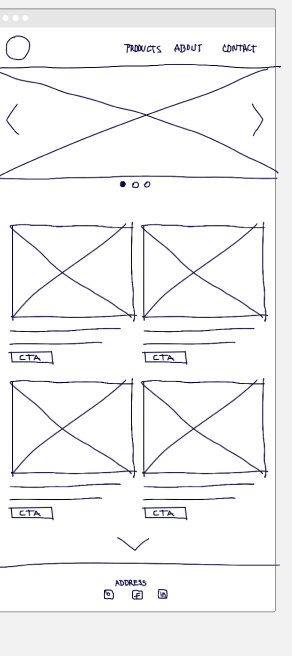
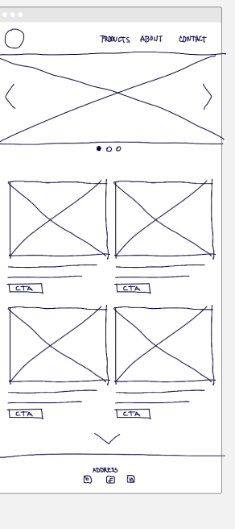

Overview
Purpose
The purpose of this site is to serve as a resource for personal growth. It aims to provide strategies and ideas that can help individuals improve themselves, both mentally, emotionally, materially, and spiritually. This site is dedicated to those who are willing to look within and put in the effort for positive change.
The site is designed to be a resource for anyone who is interested in personal growth and development.
Audience
The target audience for this site includes anyone who is interested in personal growth and development. This could include individuals who are seeking to improve their skills, expand their knowledge, or overcome personal challenges. The site is designed to be a valuable resource for anyone who is committed to becoming the best version of themselves possible.
This site is aimed at those who are willing to look within and put in the effort for positive change.
This is where you find the best strategies and ideas that can help individuals improve themselves.
Branding
Style Guide
Color Palette
Palette URL: "https://coolors.co/349e99-af6e74-001868| Primary | Secondary | Accent 1 | Accent 2 |
|---|---|---|---|
| [#349e99] | [#af6e74] | [#001868] | White |
Typography
Heading Font: 'Montserrat', sans-serif
Paragraph Font: 'Playfair Display', serif
Growth should be taken seriously since it is a crucial part of our lives. It is important for everyone to grow and develop.
Growth can come in different ways, it can come in form of self-improvement or from external sources such as friends, family, and others. It can also come in the form of a combination of both. When we grow, we are able to improve our quality of life. We tend to grow more in the short term and less in the long term. Growth should be taught in institutions of learning and should be encouraged. Growth should be a way of life for everyone. the abiliy to grow should be given to everyone. How far you grow in life is up to you. don't loose the chance to grow. Have you ever thought about being successful in life? Have you ever thought about being successful in your career? All this thoughts are attributed to a Growth mindset
Colored paragraph example
There was a some time ago, when i was young and, i was always looking for something to do. I was always thinking of how to do something. but, i was not sure, of what to do because I never had the opportunity to do anything. Things at that time was very hard, and there was no money to help my dreams come true, but i was always thinking of how to do something.I even went as far as working in a car wash store. I eventually worked in the car wash store until i was able to get a job in a local water factory, at that time I was able to foot some of my bills without asking for nothing from my parets. that really lessened the burden for my parents who were catering for the six of my sibliings. It was harsh, but I had the growth mindset and I was able to do something.
Navigation
Site Map
Content
Home page
I'm glad you're interested in personal growth! There are many ways to get started. Here are some ideas: 1. **Read books** on personal growth and development. Some popular titles include "The 7 Habits of Highly Effective People" by Stephen Covey, "The Power of Now" by Eckhart Tolle, and "The Alchemist" by Paulo Coelho. 2. **Take courses** on personal growth. Websites like Coursera, Udemy, and Mindvalley offer courses on topics like mindfulness, meditation, and self-improvement. 3. **Find a mentor** who can guide you on your personal growth journey. Look for someone who has achieved what you want to achieve and ask them to share their insights and advice. 4. **Join a community** of like-minded individuals who are also interested in personal growth. You can find communities online or in-person, depending on your preference. 5. **Practice self-reflection**. Take time to reflect on your thoughts, feelings, and actions. This can help you identify areas for improvement and set goals for personal growth. Remember, personal growth is a journey, not a destination. It takes time and effort, but the rewards are well worth it. Good luck on your journey! 😊
Images for the Home page
ContactUs
You can contact us by filling out the form below, or by emailing us at www.emmanuelnzeh894@gmail.com or call us at +234 667 8272 Source: Conversation with Bing, 12/13/2023 (1) Personal growth and transformation - HBR. https://hbr.org/topic/subject/personal-growth-and-transformation. (2) Personal growth news and latest updates - Medical Xpress. https://medicalxpress.com/tags/personal+growth/. (3) 7 Answers To The Most Frequently Asked Questions About Personal .... https://www.flippingheck.com/7-answers-to-the-most-frequently-asked-questions-about-personal-development/. Source: Conversation with Bing, 12/13/2023 (1) What Is Personal Growth and Why Is It So Important? - Mindvalley Blog. https://blog.mindvalley.com/personal-growth/. (2) Personal Growth for Beginners: 18 Ways to Better Yourself. https://growth.me/personal-growth/. (3) Self-Growth: Definition, Examples, & Tips - The Berkeley Well-Being .... https://www.berkeleywellbeing.com/self-growth.html.
Images for the Page 2
News & FAQs
Here are some news and FAQs about personal growth: - **Harvard Business Review** has a section dedicated to personal growth and transformation. You can find new ideas and classic advice for global leaders from the world's best business and management experts ². - **Medical Xpress** is a news website that covers the latest developments in science and technology. They have a section tagged with personal growth that covers topics such as psychology, psychiatry, and more ³. - **Flipping Heck!** has an article that answers some of the most frequently asked questions about personal development. The article includes tips and resources to improve your life ¹. I hope this helps!
Images for the Page 3
Wireframes
Create three wireframes for your site. One for each page and list them here


Home
Catch your attention with these intrigous images
Contactus
Reach out to us if you have any questions or concerns about the site
News & FAQs
Get the latest gists, feedbacks and more from the community in the form of gists.
 
